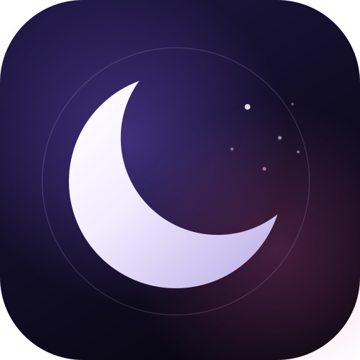
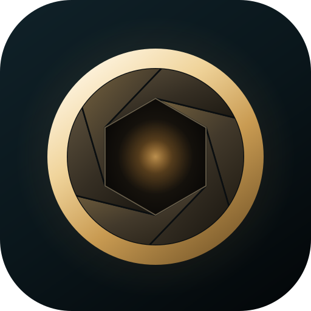
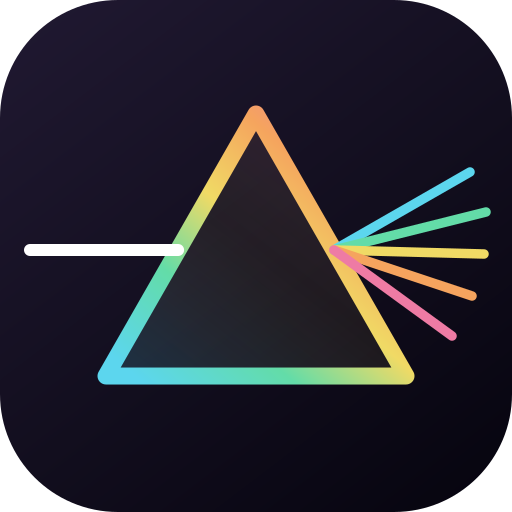
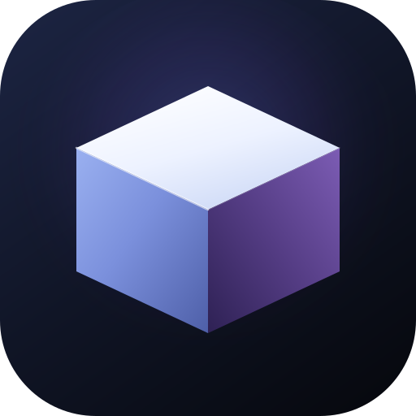

图标审计LUNARIS · ICON AUDIT
把 9 个候选图标全部还原到真实尺寸看一遍。判断标准只有一条：它在 16px 的任务栏里还认不认得出来。
01现有 5 个方案：真实尺寸存活测试
同一列里，大图好看不算数 —— 往下看它能不能活到 16px。
现行
build/icon.svg


16px 4× 放大：星点全灭，光晕糊成脏底
A3 · 巢月
月牙 + 巢弧


16px 4× 放大：巢弧消失，黄点变脏噪点
B2 · 取景框月
★ 唯一存活


16px 4× 放大：四个角块仍是独立实心几何
B3 · 框中有巢
框 + 月 + 巢


16px 4× 放大：三层元素挤成一团，无法分离
C2 · 相片叠月
叠框 + 月牙


16px 4× 放大：叠框与月牙完全粘连
02四项判据打分
「能认出来」只是及格线。一个图标要立得住，四项都得过。
| 方案 | 16px 可辨认 | 传达「摄影」 | 几何简化 | 撞车风险 | 综合 |
|---|---|---|---|---|---|
| 现行 | 否 · 糊成紫块 | 零 · 只像睡眠/夜间 App | 差 · 渐变+星点+光环 | 高 · 月牙是通用符号 | 淘汰 |
| A3 · 巢月 | 勉强 · 只剩月牙 | 弱 · 巢弧不读得出 | 中 · 两元素但细 | 中 | 可改 |
| B2 · 取景框月 | 是 · 四角框清晰 | 强 · 取景框即摄影 | 好 · 5 个实心块 | 低 | 最佳基底 |
| B3 · 框中有巢 | 否 | 中 · 被自己的复杂度压掉 | 差 · 元素过多 | 中 | 淘汰 |
| C2 · 相片叠月 | 否 | 强 · 叠框像照片堆 | 中 · 可再简化 | 低 | 可改 |
核心结论：现行图标的问题不是"不好看"，是为一块 512px 的广告牌设计的，却被塞进 16px 的任务栏。渐变、星点、光晕、描边环这四样东西，在 16px 下一样都留不下，只剩一团紫黑 —— 它连"月牙"这个唯一信息都保不住。反过来，B2 之所以活下来，只是因为取景框的四个角是四个独立实心块，离散的实心几何是抗缩放的唯一形式。
03浅色模式：换背景后全部失守
这些图标都是"深底 + 浅图形"，一旦背景变白，价值全丢。
现行
浅色版

A3 · 巢月
浅色版

B2 · 取景框月
浅色版

B3 · 框中有巢
浅色版

C2 · 相片叠月
浅色版

04另有 4 个草稿散落在 design/rebrand/
这 4 个是另一条思路（不含取景框），只看品牌气质，不看小尺寸。
lunaris
紫月 · 当前方向

lumen
金环

prism
彩虹棱镜

silvergrain
蓝紫晕 · 银盐颗粒

这一步暴露的真问题：到目前一共有 9 个图标方案（5 + 4），却没有任何一个是围绕同一套图形语言推导出来的。它们只是 9 个各自不错的小图 —— 这正是「看起来普通」的机制：不是缺方案，是缺母题。先定母题，再画图标，而不是反过来从 9 张草图里挑一张。
审计对象：
尺寸还原方式：从 icon-proposal.html 内嵌 base64 原图直接提取，16/32/64px 均为真实像素，放大图使用 nearest-neighbor 无插值，不美化任何一方。
D:\trae_projects\lunaris · build/icon.svg · design/rebrand/*.svg · design/icon-proposal.html尺寸还原方式：从 icon-proposal.html 内嵌 base64 原图直接提取，16/32/64px 均为真实像素，放大图使用 nearest-neighbor 无插值，不美化任何一方。